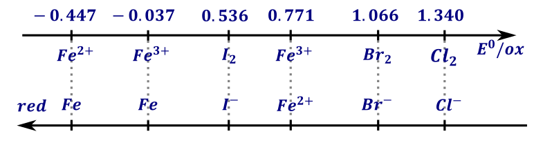
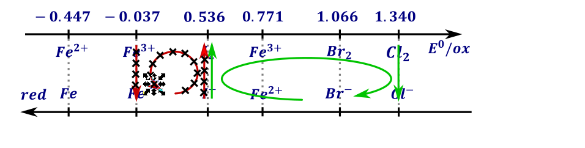
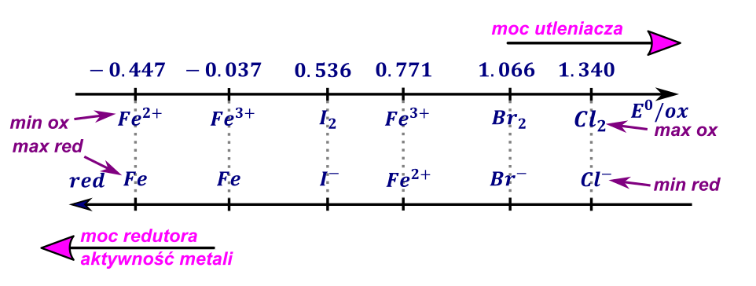
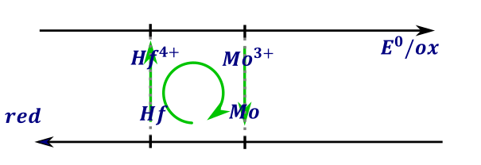
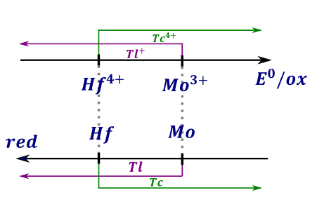
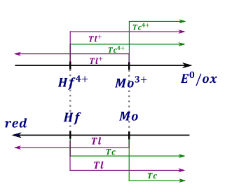
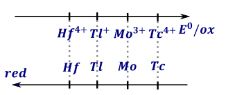
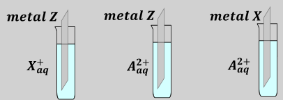
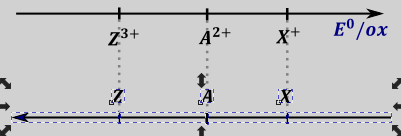
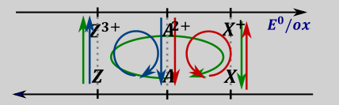

Potencjał danego układu redoks to chęć do przyjmowania elektronów (zabierania elektronów innym drobinom) podczas określonej reakcji redukcji przez dane drobiny. Potencjały podawane w tablicach zawsze są potencjałami redukcji (związki po lewej to formy utlenione) i w przeciwieństwie do entalpii nie możemy ich odwracać kierunku reakcji. Tablice potencjałów znajdują się w tablicach maturalnych i należy z nich umieć korzystać.
Znając potencjały dwóch lub więcej półreakcji możemy przewidzieć kierunek reakcji samorzutnej W reakcji redoks zawsze następuje zmiana stopni utlenienia, a więc taką reakcję możemy traktować jako awanturę dwóch drobin o elektrony. O chęci przyjmowania elektronów przez daną drobinę mówią potencjały, a więc należy porównać potencjały dwóch interesujących nas półreakcji. Ta półreakcja, której potencjał jest większy zachodzi zgodnie z kierunkiem – drobina w tej reakcji bardziej chce przyjąć elektrony, natomiast półreakcję o mniejszym potencjale odwracamy. Następnie zsumujemy klasycznie wymnażając obie półreakcje, aby elektrony się zgodziły. Np. Mając dane półreakcje wraz z potencjałami
\[Ag^{+} + e^{-} \rightarrow Ag\ \ E = 0.8V\ \rightarrow\]
\[Cr^{3 +} + 3e^{-} \rightarrow Cr\ \ \ \ E = - 0.744V\ \ \ \leftarrow\]
Widzimy, że potencjał redukcji srebra jest większy niż chromu, a więc półreakcję z chromem odwracamy:
\[Ag^{+} + e^{-} \rightarrow Ag\ \ \]
\[Cr^{3 +} + 3e^{-} \rightarrow Cr\]
\[3Ag^{+} + Cr \rightarrow Cr^{3 +} + 3Ag\]
Blaszkę bizmutową ( \(Bi\) ) \(\ \) wrzucono do roztworu berylu (jony \(Be^{2 +}\) ). Odnajdujemy i przepisujemy półreakcje dotyczące bizmutu oraz jonów \(Be^{2 +}\) . po porównaniu potencjałów widzimy, iż potencjał bizmutu jest większy, natomiast berylu mniejszy, a więc półreakcję z berylem odwracamy:
\[Bi^{3 +} + 3e^{-} \rightleftarrows Bi\ \ \ E = 0.308\ \rightarrow\]
\[Be^{2 +} + 2e^{-} \rightleftarrows Be\ \ \ E = - 1.847\ \leftarrow\]
\[Bi^{3 +} + 3e^{-} \rightarrow Bi\]
\[Be \rightarrow Be^{2 +} + 2e^{-}\]
Czyli sumaryczna
\[2Bi^{3 +} + 3Be \rightarrow 3Be^{2 +} + 2Bi\]
Do roztworu \(Fe^{3 +}\) dodano blaszkę miedzianą. Jakie reakcje mogą zajść? W tym wypadku w tablicach potencjałów mam trzy potencjały dotyczące blaszki miedzianej oraz jonów \(Fe^{3 +}\) . Półreakcji \(Cu_{2}O\ + \ H_{2}O\ + \ 2e^{-} \rightleftarrows \ 2Cu\ + \ 2OH^{-}\) nie uwzględniam w rozważaniach, występują w nich również jony \(OH^{-}\) , a o nich nic nie wiem, aby występowały.
\[Fe^{3 +} + 3e^{-} \rightleftarrows Fe\ \ \ \ \ \ E = - 0.037\]
\[Fe^{3 +} + e^{-} \rightleftarrows Fe^{2 +}\ \ E = 0.771\]
\[Cu^{2 +} + 2e^{-} \rightleftarrows Cu\ \ \ \ \ \ E = 0.342\]
Kolejno porównując parami półreakcję otrzymuje możliwe reakcje samorzutne:
\[Fe^{3 +} + 3e^{-} \rightleftarrows Fe\ \ \ \ \ E = - 0.037 \leftarrow\]
\[Cu^{2 +} + 2e^{-} \rightleftarrows Cu\ \ \ \ \ \ \ E = 0.342 \rightarrow \ \]
\[Cu^{2 +} + 2e^{-} \rightarrow Cu\]
\[Fe \rightarrow Fe^{3 +} + 3e^{-}\]
Po wymnożeniu, zsumowaniu i skróceniu elektronów dostaje reakcję samorzutną:
\[2Fe + 3Cu^{2 +} \rightarrow 3Cu + 2Fe^{3 +}\]
Jest to reakcja samorzutna, reakcja ta oczywiście może zachodzić, ale w rozważanym przypadku nie mam w kolbie żadnego z substratów. Oczywiście reakcja bez substratów nie będzie zachodzić. Analogicznie rozważając kolejną parę otrzymujemy :
\[Fe^{3 +} + e^{-} \rightarrow Fe^{2 +}\ \ \ E = 0.771 \rightarrow \ \]
\[Cu^{2 +} + 2e^{-} \rightarrow Cu\ \ \ \ \ \ E = 0.342\ \ \ \leftarrow\]
Odwracając półreakcję z miedzią jako półreakcję o mniejszym potencjale, kolejno mnożąc półreakcję z żelazem razy dwa i sumując je obie otrzymujemy reakcję samorzutną:
\[\mathbf{2}\mathbf{F}\mathbf{e}^{\mathbf{3 +}}\mathbf{+ Cu \rightarrow C}\mathbf{u}^{\mathbf{2 +}}\mathbf{+ 2}\mathbf{F}\mathbf{e}^{\mathbf{2 +}}\]
Czyli ta reakcja zachodzi, bo jest ona samorzutna oraz w mieszaninie znajdują się oba substraty.
Analogicznie mogę porównać potencjały dotyczące żelaza:
\[Fe^{3 +} + 3e^{-} \rightarrow Fe\ \ \ \ \ \ E = - 0.037\ \leftarrow\]
\[Fe^{3 +} + e^{-} \rightleftarrows Fe^{2 +}\ \ E = 0.771 \rightarrow\]
\[Fe \rightarrow Fe^{3 +} + 3e^{-}\ \ \]
\[Fe^{3 +} + e^{-} \rightarrow Fe^{2 +}\ \]
Po zsumowaniu wymnożeniu drugiej półreakcji razy trzy dostajemy reakcję samorzutną:
\[3Fe^{3 +} + 3e^{-} + Fe \rightarrow 3Fe^{2 +} + Fe^{3 +} + 3e^{-}\]
\[2Fe^{3 +} + Fe \rightarrow 3Fe^{2 +}\]
Udowodniliśmy tym samym zachodzenie procesu synproporcjonacji żelaza. Oczywiście w rozważanym przypadku ten proces też nie zachodzi gdyż nie mam w mieszaninie żelaza, czyli jednego z substratów.
Jak wspominano wcześniej, im większy potencjał chemiczny półukładu redoks tym silniejszy jest utleniacz (i słabszy tzw. Sprzężony reduktor). Zależność ta umożliwia ustalanie, która drobina jest silniejszym utleniaczem a która silniejszym reduktorem, gdyż każda reakcja redoks da się zapisać w postaci
\[\text{ }Utl_{1} + Red_{2} \rightarrow Utl_{2} + Red_{1}\]
\[2Fe^{3 +} + Cu \rightarrow Cu^{2 +} + 2Fe^{2 +}\]
Gdzie utl 1 i red 1 oraz utl 2 i red 2 to dwie drobiny występujące w półrównaniu redoks. Rozważania są analogiczne do teorii Broensteda i porównywaniu mocy kwasów, wtedy rozważaliśmy wymianę jonów \(H^{+}\) ,a przypadku reakcji redoks chodzi rozchodzi się o wymianę elektronów \(e^{-}\)
Aby zrozumieć jak projektować doświadczenia porównujące moc utleniaczy i reduktorów lub udowadniające, która drobina ma silniejsze właściwości utleniające, a która ma słabsze należy rozważyć analogię z porównaniem mocy / siły dwóch marynarzy:
Załóżmy, iż mamy dwóch marynarzy, jeden silniejszy (wojskowy), a drugi słabszy (cywilny). Chcąc porównać moc marynarzy należy zainicjować spotkanie obu marynarzy w jednym barze, tak, aby tylko jeden z nich będzie miał kogoś lub coś na czym zależeć będzie obu marynarzom – potrzebny jest powód awantury – wśród marynarzy najczęściej jest to ładna kobieta. Możemy zapisać obie półreakcje jako, jednak oddziaływanie marynarza wojskowego – silniejszego jest mocniejsze niż cywilnego, można powiedzieć, że ma wyższą potencję/cjał:
\[Wrenczi^{+} + \ kobieta^{-} \rightarrow Wrenczi - związku\ \ \ \ \ \ \ E = niski \leftarrow\]
\[Wojskowy^{+} + \ kobieta^{-} \rightarrow Wojskowy - związku\ \ \ \ \ \ \ E = wysoki \rightarrow\]
Powiedzmy, jaka będzie reakcja samorzutna, jeżeli marynarz cywilny przyjdzie do baru z ładną kobietą? Jest oczywiste, że silniejszy marynarz zabierze słabszemu kobietę, mimo, iż obaj jej pragną. Wynika to również z porównania półreakcji samorzutnych i zsumowania ich:
\[Wrenczi - związku \rightarrow Wrenczi^{+} + \ kobieta^{-}\ \]
\[Wojskowy^{+} + \ kobieta^{-} \rightarrow Wojskowy - związku\ \ \ \ \ \ \ E = wysoki \rightarrow\]
\[Wrenczi - związku\ \ \ \ \ \ + Wojskowy^{+} \rightarrow Wojskowy - związku + \ Wrenczi^{+}\]
Czy taka reakcja zajdzie? Oczywiście tak, gdyż w barze znalazł się jednocześnie marynarz cywilny z fajną dziewczyną oraz silniejszy marynarz – wojskowy, a więc mamy oba substraty przedstawionej powyżej modelowej reakcji. Reakcja zachodzi skutkiem, czego natomiast słabszy marynarz wylatuje na kopach z baru, a potem wychodzi silniejszy marynarz z kobietą. W drugim przypadku – marynarz cywilny wchodzi do baru i widzi, że wojskowy siedzi z fajną dziewczyną; Oczywiście również jej pragnie. Analizując reakcję samorzutną dostajemy:
\[Wrenzi^{+} + \ kobieta^{-} \rightarrow Wrenczi - związku\ \ \ \ \ \ \ E = niski < -\]
\[Wojskowy^{+} + \ kobieta^{-} \rightarrow Wojskowy - związku\ \ \ \ \ \ \ E = wysoki \rightarrow\]
\[Wrenczi - związku + Wojskowy^{+} \rightarrow Wojskowy - związku + \ Wrenzi^{+}\]
Oczywiście w tym wypadku nie zajdzie żadna reakcja, gdyż nie mamy substratów, a od razu mamy w mieszaninie reakcyjnej/ barze już tylko produkty. Czy oznacza to, że cywilny nie ma ochoty na tę kobietę – oczywiście, że posiada. Ale nie jest wystarczająco mocny, aby odebrać ją silniejszemu marynarzowi, a więc reakcja nie zajdzie. Zwróć uwagę, że nie ma sensu wpuszczanie do baru dwóch marynarzy bez powodu sporu (tzn., że obu nie ma kobiety, czyli zmieszanie dwóch formy utlenionych), nie mają o co walczyć, to się najpewniej upiją się w tym barze. Również nie ma sensu spotykania dwóch marynarzy z kobietami (dwóch formy zredukowanych), bo się zajmą każdy swoja kobietą, a najpewniej pójdą na tańce, a potem też się upiją.
Można powiedzieć, że wśród marynarzy powodem sporu są kobiety, a wśród utleniaczy elektrony. Ogólnie w obu przypadkach, aby reakcja zaszła to po lewej stronie równania, jako substraty, muszą się znaleźć silniejsze a po prawej słabsze.
Analogicznie, w celu zaprojektowania doświadczenia, którego celem jest porównanie mocy utleniaczy lub udowodnienie, że jeden utleniacz jest silniejszy od drugiego, do roztworu jednego utleniacza dodajemy zredukowanej (posiadającej elektrony) formy utleniacza drugiego, oraz do roztworu drugiego utleniacza dodajemy zredukowaną formę utleniacza pierwszego. Patrzymy wówczas, w którym z rozważanych wariantów zachodzi reakcja, w tym wariancie są silniejsze utleniacze i reduktory z lewej strony.
Np., jeżeli chcemy udowodnić, że \(Cl_{2}\) jest silniejszym utleniaczem niż \(Br_{2}\) , powinniśmy przeprowadzić dwie reakcje: dodać chloru \(Cl_{2}\) do zredukowanej postaci bromku (inaczej do anionów bromkowych \(Br^{-}\) bo one mają niższy stopień utlenienia od rozważanego bromu) oraz dodać bromu do zredukowanej postaci chloru – chlorków \(Cl^{-}\) .
Rozważając reakcję samorzutną przez porównanie potencjałów, dostajemy:
\[Cl_{2} + 2e^{-} \rightarrow 2Cl^{-}\ \ \ E = 1.358 \rightarrow\]
\[Br_{2} + 2e^{-} \rightarrow 2Br^{-}\ \ E = 1.066 \leftarrow\]
\[Cl_{2} + 2Br^{-} \rightarrow Br_{2} + 2Cl^{-}\]
A więc zajdzie ta pierwsza reakcja, w której do chloru dodaliśmy anionów bromkowych, natomiast drugie doświadczenie – dodatek bromu do roztworu zawierającego aniony bromkowe nie spowoduje żadnych zmian – reakcja nie zajdzie, bo nie mamy substratów.
Porównywanie potencjałów i ustalanie kierunku reakcji samorzutnej, jeżeli chodzi o jedną reakcje (lub dwie półreakcje) jest banalne – jak widzimy wystarczy odwrócić półreakcję o mniejszym potencjale i przemnożyć półreakcję, tak, aby skróciły się elektrony po zsumowaniu obu. Problem zaczyna się w momencie, w którym chodzi mamy ich więcej – rozważanie kombinacji każdej półreakcji z każdą jest po prostu żmudne i zwyczajnie męczące. Najlepszym rozwiązaniem jest wówczas porównanie mocy utleniaczy i reduktorów tak zwaną metodą zegarowa.
Polega ona na narysowaniu dwóch osi (oś utleniaczy – górna, kierunek wzrostu w prawo oraz oś reduktorów –dolna, kierunek w lewo). Na osi utleniaczy umieszczamy potencjały półrównań wraz z formami utlenionymi występującymi w tych półrównaniach (związki z lewej strony półrównań redukcji). Na dolnej osi – osi reduktorów umieszczamy formy zredukowane, – czyli drobiny występujące po prawej stronie rozważanych półrównań. Np. rozważając półreakcje związane z żelazem i halogenami:
\[Fe^{2 +} + 2e^{-} \rightleftarrows Fe\ \ \ \ \ \ \ \ \ \ E = - 0.447V\]
\[Fe^{3 +} + 3e^{-} \rightleftarrows Fe\ \ \ \ \ \ \ \ \ \ \ E = - 0.037V\]
\[Fe^{3 +} + e^{-} \rightleftarrows Fe^{2 +}\ \ \ \ \ \ E = 0.771V\]
\[I_{2} + 2e^{-} \rightleftarrows 2I^{-}\ \ \ \ \ \ \ \ \ \ \ \ \ E = 0.536V\]
\[Br_{2} + 2e^{-} \rightleftarrows 2Br^{-}\ \ \ \ \ \ \ E = 1.066V\]
\[Cl_{2} + 2e^{-} \rightleftarrows 2Cl^{-}\ \ \ \ \ \ \ \ \ E = 1.340V\]
Graf sporządzony tak, jak opisano powyżej będzie wyglądał następująco:

W każdej reakcji redoks utleniacz powinien redukować się (kierunek w dół na przedstawionym grafie), a reduktor utlenić, co symbolizuje kierunek w górę na zachodzącym grafie). Potrzebujemy, więc na grafie jednej strzałki do góry i jednej w dół.
REAKCJA SAMORZUTNA TO TAKA, KTÓRA IDZIE ZGODNIE Z RUCHE ZEGARA

Tzn. reakcja samorzutna to na przykład taka, w której \(Cl_{2}\) redukuje się do \(Cl^{-}\) , a \(I^{-}\) utlenia się do \(I_{2}\) , gdyż kierunek obu półreakcji zgodny wówczas z ruchem wskazówek zegara
Z tego grafu ponadto idzie odczytać w bardzo prosty sposób kolejność wzrostu mocy utleniaczy i reduktorów – moc utleniaczy wzrasta zgodnie z kierunkiem osi utleniaczy – górna oś. Oczywiście w ten sposób możemy porównywać tylko utleniacze. Możemy więc powiedzieć, że kolejność wzrostu mocy utleniacz y jest następująca : \(Fe^{2 +} < I_{2} < Fe^{3 +} < Br_{2} < Cl_{2}\) . Dla drobin występujących dwa razy, takich jak w analizowanym przypadku używamy półreakcji o wyższym potencjale. Drobina taka redukuje wówczas się do \(Fe^{2 +}\) , nie \(Fe\) . Analogicznie kolejność wzrostu mocy reduktorów możemy odczytać z dolnej osi – osi reduktorów, w tym wypadku moc reduktora rośnie w lewo, a więc możemy powiedzieć, że kolejność wzrostu mocy reduktora jest następująca: \(Cl^{-} < Br^{-} < Fe^{2 +} < I^{-} < Fe\) , Z wykresu jest bardzo łatwo ustalić co jest najsilniejszym utleniaczem (prawy górny róg, \(Cl_{2})\) najsłabszym ulteniaczem \(Fe^{2 +}\) -lewy górny róg czy też co jest najsilniejszym reduktorem – lewy dolny róg (Fe) a co najsłabszym reduktorem (prawy dolny róg).

Im metal ma większy potencjał tym jest mniejsza jego aktywność chemiczna (bo reaguje z mniejszą ilością rzeczy). Szlachetność metalu rośnie w drugą stronę, metal najbardziej szlachetny będzie po prawej stronie tegoż grafu. O metalach szlachetnych mówmyi wtedy, kiedy ich potencjał jest większy od zera, inaczej są po prawej stronie półogniwa wodorowego \(H^{+}\text{/}H_{2}\) . Przykładem metalu aktywnego jest złoto, o potencjale równym 1.5V. Umieszczając je na wykresie, widzimy, iż nie przereaguje ono nawet z gazowym chlorem, aby w ogóle reakcja zaszła musimy użyć utleniacza o potencjale większym od potencjału złota, a więc bardzo na prawo na wykresie. W przeciwieństwie do metali szlachetnych, metale aktywne mają niski potencjał, im niższy tym bardziej szlachetny, a więc czyli reagują praktycznie ze wszystkimi utleniaczami.
Najbardziej aktywny metal znajduje się na dole po lewej (jest najsilniejszym reduktorem) patrz sód
Rozpatrzmy zadanie z matury:
Przeprowadzono doświadczenie, którego celem było porównanie aktywności chemicznej czterech metali: talu (Tl), technetu (Tc), hafnu (Hf) i molibdenu (Mo). Stwierdzono, że z udziałem wymienionych metali i ich jonów samorzutnie zachodzą reakcje, których przebieg ilustrują poniższe równania w formie jonowej skróconej:
\[3Hf + 4\ Mo^{3 +} \rightarrow 3Hf^{4 +} + 4Mo\]
\[3Tl + Mo^{3 +} \rightarrow 3Tl^{+} + Mo\]
\[Hf + Tc^{4 +} \rightarrow Hf^{4 +} + Tc\]
\[Hf + 4Tl^{+} \rightarrow Hf^{4 +} + 4Tl\]
\[4Mo + 3Tc^{4 +} \rightarrow 4Mo^{3 +} + 3Tc\]
Uszereguj wymienione metale według malejącej aktywności chemicznej – napisz ich symbole w odpowiedniej kolejności:
Największa aktywność najmniejsza aktywność
Spośród kationów biorących udział w opisanych reakcjach wybierz jon, który jest najsilniejszym utleniaczem i jon, który jest najsłabszym utleniaczem. Napisz wzory wybranych jonów.
Wydaje się, że jedynym sensownym rozwiązaniem tego zadania jest przygotowanie tegoż grafu i umieszczenie na nim drobin w odpowiedniej kolejności, tak aby kolejność ich przedstawiała kolejność reakcji samorzutnych zachodzących w zapisanych w treści reakcjach.
Rozpoczynamy od pierwszej reakcji. Widzimy, iż formami utlenionymi są \(Mo^{3 +}\) i \(Hf^{4 +}\) , zredukowanymi natomiast \(Mo\) i \(Hf\) . Możemy, więc umieścić, tak, aby molibden był z lewej strony hafnu lub z prawej – mamy dwa warianty, ani więcej, ani mniej. Rozpatrzmy oba, ale dla każdego porównania można rozpatrzeć jeden – powiedzmy, że dodawany pierwiastek był z prawej wobec układu umieszczonego wcześniej, – jeżeli trafimy to dobrze, jeżeli nie trafimy to znaczy, że był z drugiej strony.

Porównanie polega na sprawdzeniu czy reakcja, która jest napisana w treści zadania jest reakcją samorzutną. Aby tak było musi na narysowanym grafie spełniać regułę zegara. Widzimy, iż dla lewego grafu jest spełniona reguła zegara – reakcja przebiega tak jak powinna, a więc molibden względem hafnu jest umieszczony poprawnie. Natomiast dla prawego rozmieszczenia widzimy, iż nie mamy spełnionej reguły zegara, – aby reakcja przebiegała w ten sposób zegar musiałby chodzić w drugą stronę, a więc hafn musi być po przeciwnej stronie od molibdenu – musi być po lewej albo mieć mniejszy potencjał..

Przez analizę półreakcji \(3Tl + Mo^{3 +} \rightarrow 3Tl^{+} + Mo\) oraz \(Hf + Tc^{4 +} \rightarrow Hf^{4 +} + Tc\) analogicznie możemy powiedzieć, że tal musi mieć mniejszy potencjał od molibdenu oraz technet musi mieć większy potencjał od hafnu. Analiza reakcji \(Hf + 4Tl^{+} \rightarrow Hf^{4 +} + 4Tl\) umożliwia określenie, iż tal musi być po prawej stronie od hafnu, z kolei analiza reakcji \(4Mo + 3Tc^{4 +} \rightarrow 4Mo^{3 +} + 3Tc\) umożliwia określenie, że technet będzie miał wyższy potencjał (będzie po prawej stronie) od molibdenu. Zgromadzone informacje możemy zamieścić na diagramie zbiorczym:

Możemy z niego wyczytać, iż tal musi mieć potencjał (po prostu musi być) pomiędzy hafnem i molibdenem, a natomiast technet musi mieć większy potencjał niż molibden oraz hafn. W związku, z czym kolejność drobin na diagramie musi być następująca

Co możemy potwierdzić przedstawieniem reakcji umieszczonych w zadaniu na tym grafie. Widzimy, iż wszystkie reakcje spełniają regułę zegara. Mając już ten graf z łatwością możemy odpowiedzieć na pytanie zadane pod informacją do zadania:
Uszereguj wymienione metale według malejącej aktywności chemicznej – napisz ich symbole w odpowiedniej kolejności:
(najbardziej aktywny metal = lewy dolny róg)Hf, Tl, Mo, Tc
Największa aktywność najmniejsza aktywność
Spośród kationów biorących udział w opisanych reakcjach wybierz jon, który jest najsilniejszym utleniaczem i jon, który jest najsłabszym utleniaczem. Napisz wzory wybranych jonów.
Najsilniejszy utleniacz =prawy górny róg = \(Tc^{4 +}\)
Najsłabszy utleniacz = lewy górny róg = \(Hf^{4 +}\)
Kolejnym zadaniem, znacznie łatwiejszym niż poprzednie jest zadanie z matury:
O trzech metalach umownie oznaczonych symbolami \(A,\ X\ i\ Z\) wiadomo, że tworzą wyłącznie kationy o wzorach \(X^{+};A^{(2 + )};Z^{3 +}\) . Stwierdzono, że właściwości utleniające kationów tych metali maleją w szeregu \(X^{+},\ A^{2 +},\ Z^{3 +}\) .

Przeprowadzono doświadczenie z udziałem metali \(Z\) i \(X\) oraz wodnych roztworów soli, w których obecne były jony \(X^{+}\) i \(A^{2 +}\) . Schemat doświadczenia przedstawiono poniżej: Wskaż metal, który jest najsłabszym reduktorem, oraz metal, który jest najsilniejszym reduktorem. Użyj symboli \(A,\ X\) albo \(Z\) .
Najsłabszy reduktor:
Najsilniejszy reduktor:
W jednej probówce nie zaobserwowano objawów reakcji.
Napisz numer probówki, w której nie zaobserwowano objawów reakcji. Napisz w formie jonowej skróconej równania dwóch reakcji, które przebiegły podczas przeprowadzonego doświadczenia. Użyj symboli \(A,\ X,\ Z\) .
Zadanie jest bardzo łatwe do rozwiązania, jeżeli znamy metodę zegarową. Zgodnie z danymi w zadaniu: „Stwierdzono, że właściwości utleniające kationów tych metali maleją w szeregu \(X^{+},\ A^{2 +},\ Z^{3 +}\) .” Przygotowuję graf, gdzie na osi utleniaczy umieszczam od lewej \(Z^{3 +}\) (najmniejsze właściwości utleniające), \(A^{2 +}\) oraz \(X^{+}\) (największe właściwości utleniające). Na osi reduktorów umieszczam odpowiednie metale, graf będzie miał postać:

Wskazanie wówczas najsłabszego i najsilniejszego reduktora jest banalne – wystarczy odpowiednio odczytać skrajny lewy (najsilniejszy reduktor) i prawy (najsłabszy reduktor) pierwiastek na osi reduktorów – czyli odpowiednio najsilniejszym reduktorem będzie Z, natomiast najsłabszym X. Również wskazanie reakcji, która nie zaszła jest banalne – należy zobaczyć na grafie, które doświadczenie nie przebiega zgodnie z ruchem wskazówek zegara na tym grafie

Widzimy, iż jedyną reakcją, dla której kierunek reakcji nie jest zgodny z ruchem wskazówek zegara jest reakcja trzecia, na grafie zaznaczona na czerwono. W dwóch pozostałych probówkach reakcje musiały zajść; podczas zapisywania ich pamiętamy, aby ładunek również po obu stronach się zgadzał. Brak zgodności ładunku w reakcji jest tak dużym błędem jak brak bilansu jednego z atomów.
\[Z + {3X}^{+} \rightarrow 3X + Z^{3 +}\]
\[2Z + 3A^{2 +} \rightarrow {2Z}^{3 +} + 3A\]
Inaczej możemy wykorzystać graf form utlenionych i zredukowanych – najpierw przebiega reakcja według największego możliwego kółka mówiącego o procesie samorzutnym, a dopiero po całkowitym przereagowaniu jednego z reagentów zmniejszamy kółko. Dla powyższego układu graf wyglądać będzie następująco:
Widzimy, że najpierw zachodzi reakcja „zielona” – utlenianie glinu do jonu \(Al^{3 +}\) , a dopiero po wyczerpaniu się glinu zaczyna zachodzić utlenianie cynku. W przypadku wcześniejszego redukcji jonów miedzi reakcja się zatrzymuje – nie ma już innych utleniaczy.
W reakcję utlenienia redukcji musimy dobrać pod kątem środowiska, tzn. niemożliwe jest, aby brać reakcję, w której uczestniczą jony \(H^{+}\) w środowisku zasadowym, bo tych jonów tam zwyczajnie nie będzie. Analogicznie np. roztwarzając cynk w środowisku zasadowym będziemy raczej używać półrównania
\[Zn + 4OH^{-} \rightarrow Zn(OH)_{4}^{2 -} + 2e^{-}\]
Gdyż cynk występuje w tym środowisku w postaci hydroksykompleksu, a nie gołego jonu \(Zn^{2 +}\) .